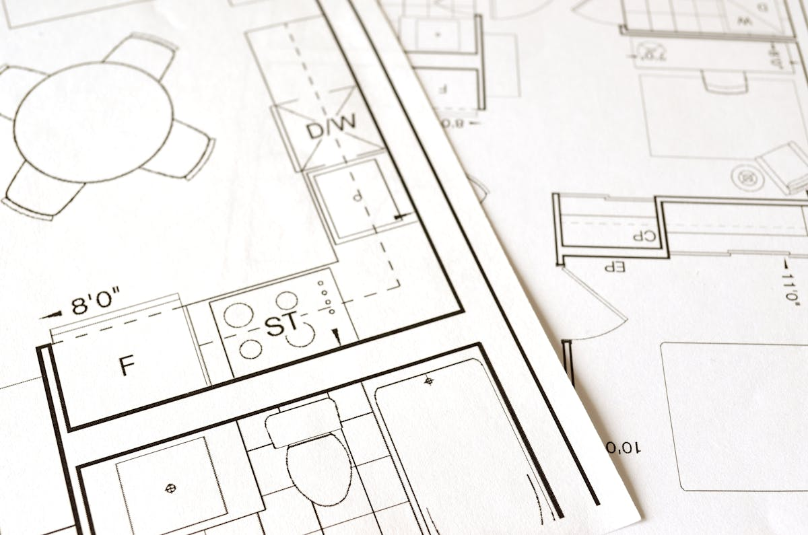

How to Convert B Khata to A Khata in Bangalore: Complete Guide to Fees, Documents & Process (2026)
Property ownership documentation plays a crucial role in Bangalore's real estate market. One of the most common concerns among property owners is converting a B Khata property to an A Khata property. With the latest government initiatives and simplified online procedures, converting your property has become easier than ever.
At Marvel Consultants, we assist property owners across Bangalore with Khata Transfer, B Khata to A Khata Conversion, E-Khata Registration, Property Documentation, and Legal Verification Services.
Quick Summary (2026)
Converting B Khata to A Khata in Bangalore now costs approximately 2% of the guidance value (reduced from 5%), can be done online via the BBMP e-Aasthi portal, and typically takes 30–45 days. Read on for the full eligibility, documents, fees and step-by-step process.
What is B Khata?
A B Khata is a property record maintained by BBMP for properties that do not fully comply with zoning regulations, building bye-laws, or land conversion norms. While owners can pay property tax under B Khata, the property is not considered fully regularized.
Common reasons for B Khata classification include:
- Properties built on revenue land
- Unapproved layouts
- Deviations from sanctioned building plans
- Missing land conversion documents
- Properties with legal compliance issues
What is A Khata?
An A Khata is an official BBMP property record issued to legally compliant properties. It confirms that the property follows municipal regulations and is eligible for various civic and financial benefits.
Benefits of A Khata include:
- ✔ Easy Home Loan Approval
- ✔ Higher Property Resale Value
- ✔ Building Plan Approval
- ✔ Smooth Property Registration
- ✔ Legal Ownership Recognition
- ✔ Better Investment Opportunities
Difference Between A Khata and B Khata
| Feature | A Khata | B Khata |
|---|---|---|
| Legal Status | Fully Legal & Compliant | Semi-Legal |
| Building Approval | Approved | May Not Be Approved |
| Bank Loans | Easily Available | Limited Approval |
| Property Value | Higher | Lower |
| BBMP Records | Official Register | Separate Register |
| Resale Potential | Excellent | Restricted |
Why Convert B Khata to A Khata?
Converting your property offers several advantages:
1. Easier Loan Approvals
Banks and financial institutions prefer A Khata properties for housing loans.
2. Increased Property Value
A Khata properties attract more buyers and command better market prices.
3. Legal Security
It strengthens your ownership rights and reduces future legal complications.
4. Building Plan Sanctions
BBMP generally approves construction and renovation plans only for A Khata properties.
5. Smooth Property Transactions
Selling, gifting, or transferring an A Khata property is much easier.
Documents Required for B Khata to A Khata Conversion
To apply for conversion, keep the following documents ready:
Mandatory Documents
- Registered Sale Deed
- Current B Khata Certificate
- Khata Extract
- Latest Property Tax Paid Receipts
- Aadhaar Card
- Encumbrance Certificate (EC)
- Latest Electricity Bill
- Water Bill
- Property Sketch
- Passport Size Photograph
Additional Documents (If Applicable)
- DC Conversion Order
- Approved Building Plan
- Occupancy Certificate
- Betterment Charge Payment Receipt
Pro Tip
Keep both physical and scanned (PDF) copies ready. Clear, legible scans speed up online verification on the BBMP e-Aasthi portal and reduce the chance of rejection.
Eligibility for B Khata to A Khata Conversion
Before applying, ensure that:
- Property taxes are fully paid
- Property has clear ownership records
- Land conversion has been completed (if applicable)
- Property has proper road access
- No major legal disputes exist
- Zoning regulations are complied with
Step-by-Step Process for B Khata to A Khata Conversion in Bangalore
Offline Process
-
Step 1: Verify Eligibility
Check whether your property qualifies for conversion under BBMP regulations.
-
Step 2: Clear Outstanding Dues
Pay all pending taxes and penalties.
-
Step 3: Collect Application Form
Visit the concerned BBMP office or Assistant Revenue Officer (ARO) office.
-
Step 4: Submit Documents
Attach all supporting documents and submit the application.
-
Step 5: Pay Applicable Fees
Pay the application fee and conversion charges.
-
Step 6: Property Inspection
BBMP officials may conduct site verification.
-
Step 7: Approval and Issuance
Upon approval, the A Khata certificate will be issued.
Online Process Through the BBMP e-Aasthi Portal
-
Step 1: Visit the Portal
Visit the official BBMP e-Aasthi portal.
-
Step 2: Locate Your Property
Find your property using the PID Number, ePID Number, Assessment Number or Ward Number.
-
Step 3: Upload Documents
Upload all required documents.
-
Step 4: Aadhaar e-KYC
Complete Aadhaar e-KYC verification.
-
Step 5: Pay the Application Fee
Pay the application fee online.
-
Step 6: Verification & Inspection
Await verification and inspection by BBMP officials.
-
Step 7: Pay Betterment Charges
Pay betterment charges if applicable.
-
Step 8: Receive A Khata Certificate
Receive your A Khata certificate online.
B Khata to A Khata Conversion Fees in Bangalore (2026)
Under the recent government initiative, conversion charges have been reduced for eligible properties.
Approximate Cost Structure
| Fee Type | Approximate Cost |
|---|---|
| Application Fee | ₹500 |
| Conversion Charges | 2% of Guidance Value |
| Khata Certificate Fee | ₹25 |
| Khata Extract Fee | ₹100 |
| Betterment Charges | Applicable as per BBMP |
| DC Conversion Charges | Varies |
Example Calculation
Property Guidance Value: ₹80 Lakhs
Earlier Conversion Fee (5%) = ₹4,00,000
Current Conversion Fee (2%) = ₹1,60,000
This results in significant savings for property owners.
How Long Does the Conversion Process Take?
The average processing time is:
- 30 to 45 Days
- Approximately 4 to 6 Weeks
Timelines may vary depending on document verification and inspections.
Common Reasons for B Khata Conversion Rejection
Applications may be rejected due to:
Incomplete Documentation
Missing sale deed, tax receipts, or conversion records.
Property Tax Arrears
Outstanding taxes or penalties.
Legal Disputes
Ownership conflicts or court cases.
Zoning Violations
Violation of land-use regulations.
Lack of Road Access
Properties without proper public road connectivity.
Unapproved Layouts
Layouts not recognized by planning authorities.
Why Choose Marvel Consultants for B Khata to A Khata Conversion?
Converting a B Khata property requires proper legal knowledge, documentation, and coordination with government authorities.
Our services include:
- ✔ B Khata to A Khata Conversion
- ✔ E-Khata Registration
- ✔ Khata Transfer Services
- ✔ Property Documentation
- ✔ Legal Verification
- ✔ Encumbrance Certificate Assistance
- ✔ BBMP Property Consultation
- ✔ Property Mutation Services
- ✔ Revenue Record Verification
Our experienced team helps property owners complete the process efficiently while minimizing delays and rejections.
Frequently Asked Questions (FAQs)
1. How much does B Khata to A Khata conversion cost in Bangalore in 2026?
Under the latest government initiative, conversion charges are approximately 2% of the property's guidance value (reduced from 5% earlier), plus a nominal application fee of around ₹500, a Khata certificate fee of ₹25 and a Khata extract fee of ₹100. Betterment and DC conversion charges may apply depending on the property.
2. How long does B Khata to A Khata conversion take?
On average the process takes about 30 to 45 days (roughly 4 to 6 weeks), depending on document verification and site inspection timelines.
3. What documents are required for B Khata to A Khata conversion?
You need the registered sale deed, current B Khata certificate, khata extract, latest property tax receipts, Aadhaar card, encumbrance certificate, latest electricity and water bills, property sketch and a passport-size photograph. DC conversion order, approved building plan, occupancy certificate and betterment charge receipts may be required if applicable.
4. Can I convert B Khata to A Khata online in Bangalore?
Yes. You can apply through the official BBMP e-Aasthi portal by locating your property with the PID or assessment number, uploading documents, completing Aadhaar e-KYC, paying the fees online and receiving your A Khata certificate after verification.
5. Why is A Khata better than B Khata?
An A Khata confirms your property is legally compliant. It enables easy home loan approval, higher resale value, building plan sanctions, smooth property registration and full legal ownership recognition, whereas a B Khata offers only semi-legal status with limited loan and approval options.
6. Why do conversion applications get rejected?
Common reasons include incomplete documentation, outstanding property tax arrears, ownership disputes or court cases, zoning and land-use violations, lack of proper public road access, and unapproved layouts.
Need Help with B Khata to A Khata Conversion in Bangalore?
Marvel Consultants offers professional support for property documentation, Khata services, legal verification, and BBMP-related property matters. Contact our team today for expert guidance and hassle-free property documentation services.
Conclusion
Converting your B Khata property to A Khata is one of the smartest steps you can take as a property owner in Bangalore. With the recent reduction in conversion charges to around 2% of guidance value and the convenience of the BBMP e-Aasthi online portal, the process is faster and more affordable than ever. By ensuring your documents are complete, your taxes are cleared and your property meets eligibility norms, you can secure full legal recognition, easier loans and higher resale value.
For end-to-end assistance — from eligibility checks to final A Khata certificate issuance — Marvel Consultants is here to make the journey smooth and stress-free.